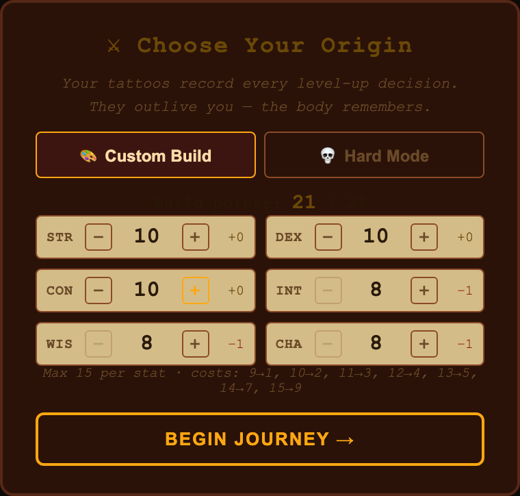
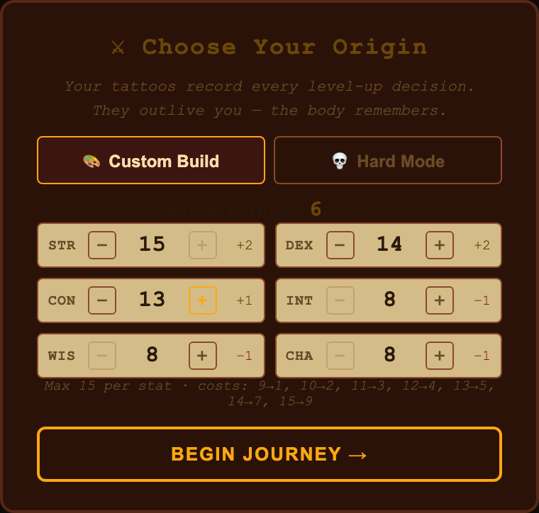
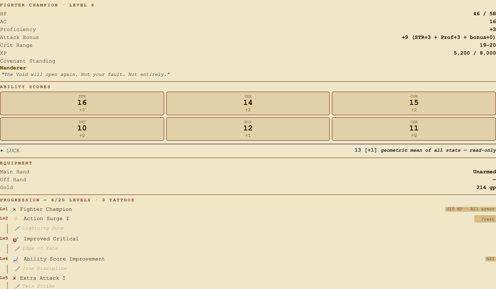
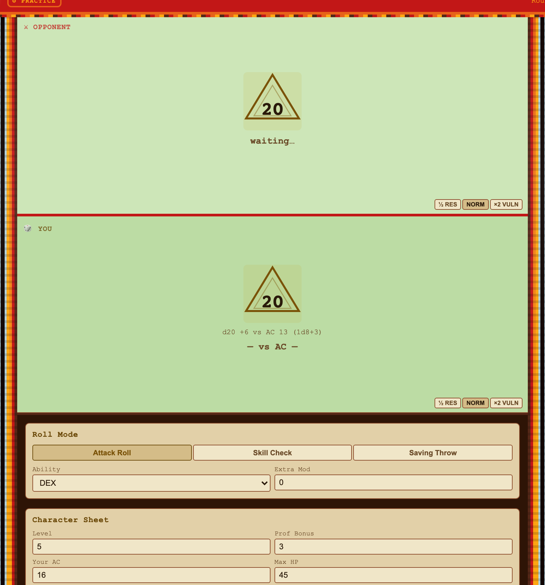
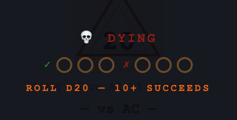
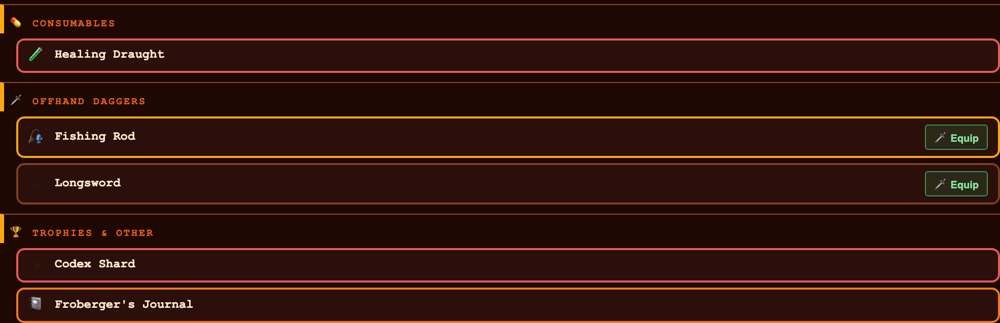
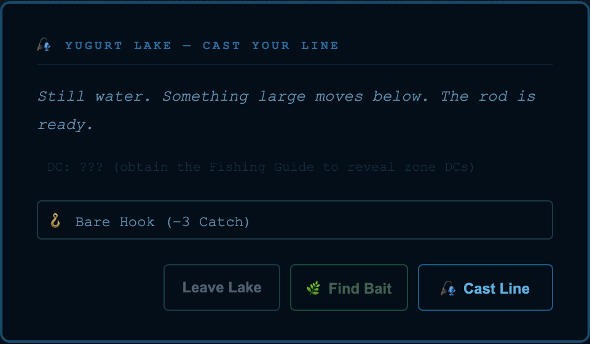
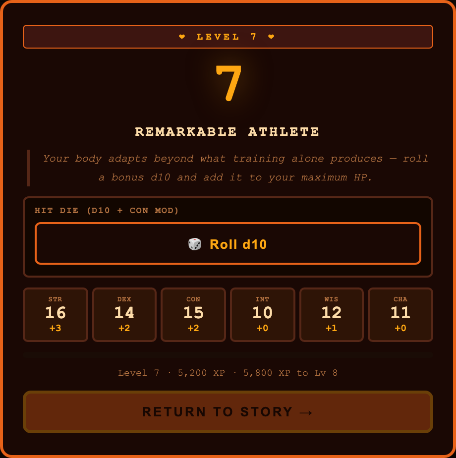

A text dungeon with the dice showing. Seven scholar-kings died to seal the Void — you have a sword, a coin purse and forty-nine days.
▶ PLAYRuns offline in your browser · saves stay on your machine
╔════════════════════════════════════════════════════════╗ ║ CITY STREETS — BIRKA Act I · Day 1/49 ║ ╚════════════════════════════════════════════════════════╝ Rain on the cobbles. The sky over Birka flickers — and it is not lightning. It is something thinner than that. A young man in a brown courier's satchel rounds the corner too fast and collapses at your feet. His coat is dark. He presses a folded, stained map into your hand. > "Sweelinck." EXITS north: slums east: inn down: the crypt HERE ▸ courier (dying) ▸ folded map ──────────────────────────────────────────────────────────── > take map WIS Insight DC 12 d20 ⟨14⟩ + WIS 1 = 15 vs DC 12 ▸ PASS The ink is faded. Four towns. Seven symbols.
A MUD is a multi-user dungeon — the text games people played over terminals before graphics, where a room is a paragraph, movement is a compass direction, and the world is described rather than drawn.
Codex of Conquest is one of those, with the dice showing. You read a room, choose a verb, and walk somewhere. When something is uncertain, the game rolls a d20 and shows you the whole sum — the die, the modifier, the DC, the outcome — the way someone running a game at a table would say it out loud.
Classic tabletop mechanics, kept in plain sight: armour class, initiative, advantage and disadvantage, criticals on a natural 20, damage dice by weapon, six ability scores. What it does not do is hide any of it behind an animation.
You play one Human Fighter Champion, level 1 to 20, crossing a continent alone. You are frequently the hired help in someone else’s story — and the game is honest about that. You witness more than you command.
The whole game is one HTML file. Nothing to build, nobody to sign up with, and no dependency tree to audit before you can read the code.
The copy on this site is the current build. Open play.html and you are in. Saves live in your browser’s localStorage — nothing is uploaded, nothing phones home.
Roughly 5.5 MB, and yours forever:
# just the game — playable offline, for good curl -L -O https://raw.githubusercontent.com/vonglurt/codexofconquest/main/play.html open play.html # or the whole project curl -L https://github.com/vonglurt/codexofconquest/archive/refs/heads/main.zip -o codexofconquest.zip
Tagged builds land on the releases page. There is no artefact to choose between — the tag is the file.
git clone https://github.com/vonglurt/codexofconquest.git cd codexofconquest make install # restores src/node_modules make # lists every target make play # API + monitor, opens the game make edit # the world editor make check # the full gate chain make test # 960 Playwright tests
The node project lives in src/, not the repo root — src/NODE.md explains why, and how to run npm directly.
Walk, look, fight, carry, ask, endure. Every system below is built around those verbs — because that is the whole of what one person with a sword can bring to a continent.
Movement is a system, not a menu. A cell grid with roads, junctions and sea lanes; terrain sets your encounter rate; distance costs days against the clock.
416 nodes across four towns and eight acts — Birka, Tilbury, Visby, Weimar — with a live minimap, a region view and auto-travel along the road net.
2,853 of them. Escort vignettes, waypoint deliveries, arcs spanning acts. Arrival can complete a quest: walking to the right place is the verb.
398 across tiers, with encounter rates per terrain — so walking somewhere you are not ready for is legible before it is fatal.
STR, DEX, CON, INT, WIS, CHA — and Luck. DCs are named before you commit, and failure usually costs days rather than the run.
204 profiles, 213 dialogue sets. Favour rises when you choose people over efficiency, and the ending names the friends you kept.
The world’s memory. Every witnessed event sets a bit; gates, quests and dialogue read them, so the world knows what you have done.
The real loss condition. Pressure builds where defenders are thin — the twenty Epic Battlegrounds are specific failures waiting for you.
Death leaves a corpse and a grave marker you can walk back to. Loot tables, weapon economy, and an honest message about what you lost.
A progression track carried in ink. Perks, badges and marks that survive New Game+ along with the journal you filled.
Optional. Run the local server and your world joins a peer mesh — presence, chat, consensual duels, shared maps, hash-chained ledgers.
Seventeen entries from a dead courier. Entry 41 stops mid-page. In New Game+, you write Entry 42.
Every image below is a crop of the running game, captured straight from the test harness — not a mockup and not a render. The state behind each was seeded the same way the integration suite seeds it.




d20 +6 vs AC 13 (1d8+3). Attack, skill check and saving throw are the same three buttons all game.



The courier’s name was Froberger. His journal is found early and read in fragments — seventeen entries, five of them read aloud at particular places in the world. Entry 41 is the last. He stopped writing in the middle of the page, and the blank line beneath it is not an accident.
The theme is the curse of knowledge: once you understand something, you can no longer remember what it was like not to. Froberger saw the Void clearly and tried telling people. They could not hear it. So he stopped telling and started fixing, and became the only one who could do what needed doing — and that, not anything with teeth, is what destroyed him.
In New Game+, you write Entry 42. There are four endings; one names every person you helped, by name. One does not.
edit.html is a visual world builder — nodes, terrains, monsters, quests, NPCs and mission bits, the flags the game reads to know what has already happened. Point it at the local API and you can add a town, wire a road, write a quest chain and watch it appear in the running game.
A set of CI gates then checks the world for dead links, unreachable nodes, duplicate keys and quests that can never complete — because content that cannot be reached is the failure mode this project keeps finding.
This project documents itself unusually hard. Every significant piece of work has an engineering write-up: the spec, what actually shipped, and a delta table naming everything that did not.
They are not marketing. A report claiming something that never shipped is marked NOT SHIPPED and kept, because the gap is the useful part. Their line-number citations are gate-checked — 4,713 anchors across 119 documents, zero dead. Titles open the rendered document; RAW gives you the plain markdown.
Whole folder: docs/lab-reports/ · master index: docs/design/index.md · open work: six phase backlogs.
Codex of Conquest is MIT licensed — not source-available, actually MIT. Copy it, change it, sell it, ship your own world on it.
Read CONTRIBUTING.md first — it carries the working rules, including the existing-work-first policy that has saved several rewrites of work already shipped.